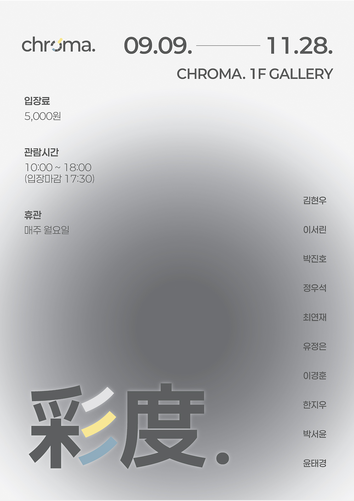
09.09. ~ 11.28.
채도는 색의 강도가 아닌, 공간 속 대비로 드러나는 감각이다.
무채색 구조 위에 놓인 최소한의 색이 시선과 인식을 새롭게 정의한다.
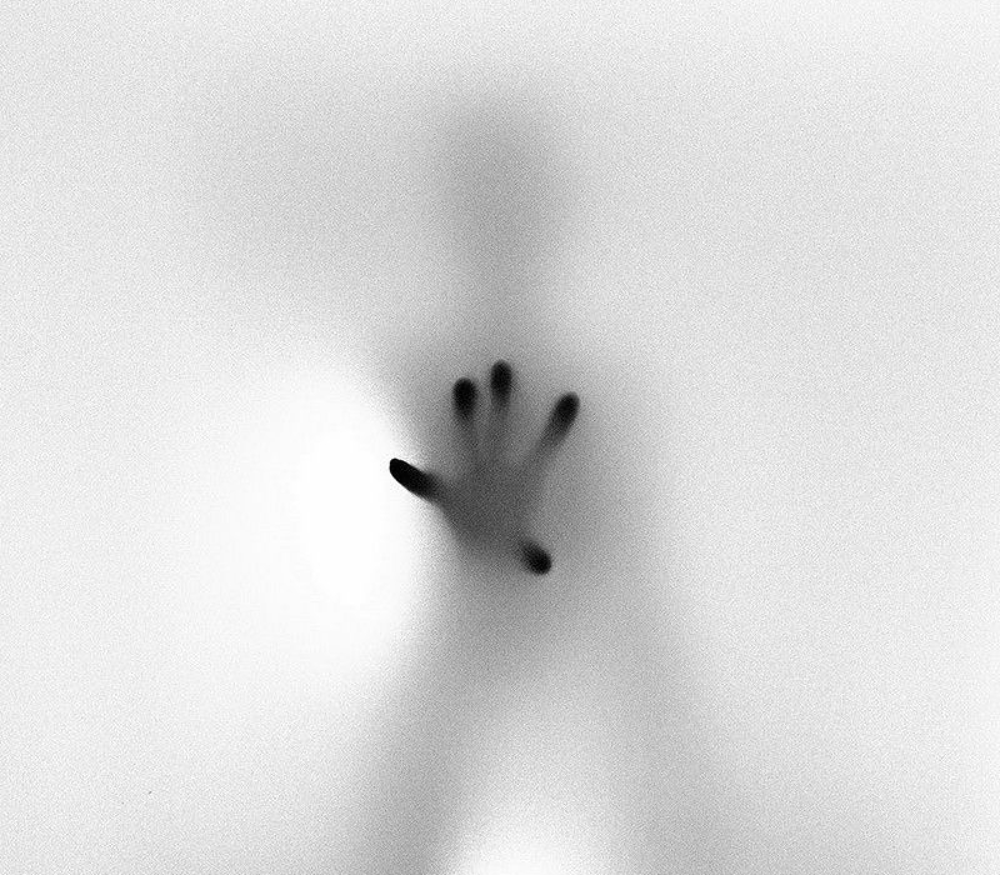
보이지 않는 경계 위에서,
존재는 서서히 형태를 드러낸다.
블러 처리와 낮은 명도 대비를 통해
접촉이 차단된 상태를 형성하며,
마치 서로를 마주하고도 닿지 않는
현대인의 관계를 연상시킨다.
대비가 형성한 경계 위에서,
형태는 점진적으로 드러난다.
강한 명도 대비와 노이즈 처리를 통해
얼굴의 윤곽을 흐리며,
마치 서로의 얼굴을 인식하지 못한 채 살아가는
요즘 현대인의 관계를 연상시킨다.
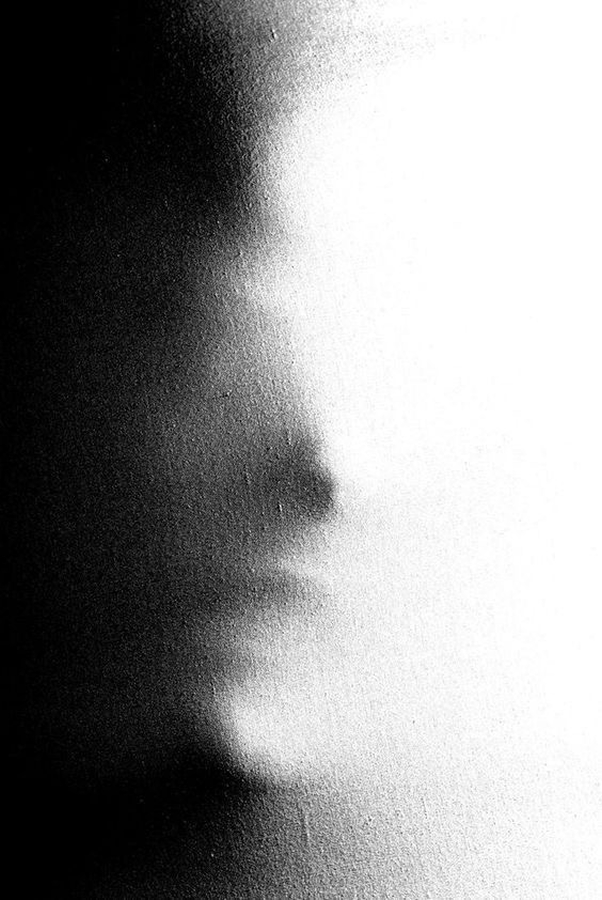
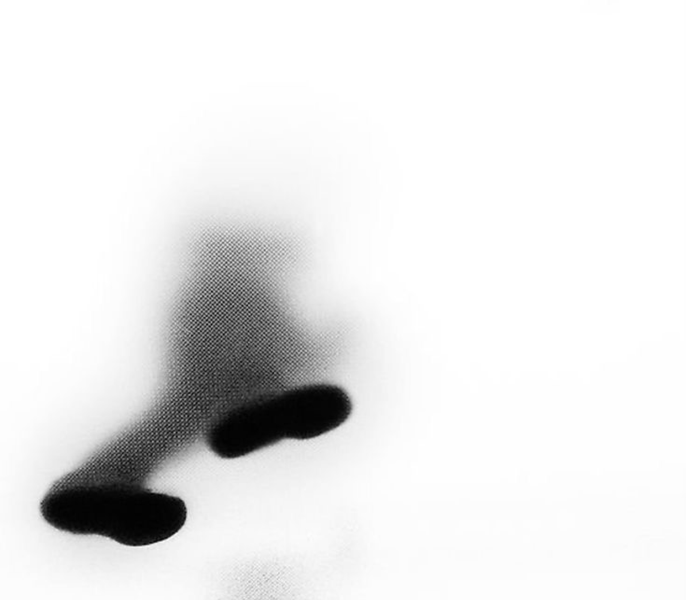
흐려진 형상 속에서도,
감각은 여전히 남아있다.
이미지는 블러와
낮은 명도 대비를 통해 경계를 최소화한다.
매일 아침 흐릿하게 스치는 출근길의 장면처럼,
반복되는 일상의 이동 과정에서 나타나는
시지각 경험을 환기시킨다.
chroma에서 열리는 전시 공간을
자유롭게 경험해보며, 다양한 이벤트를 즐겨보세요.
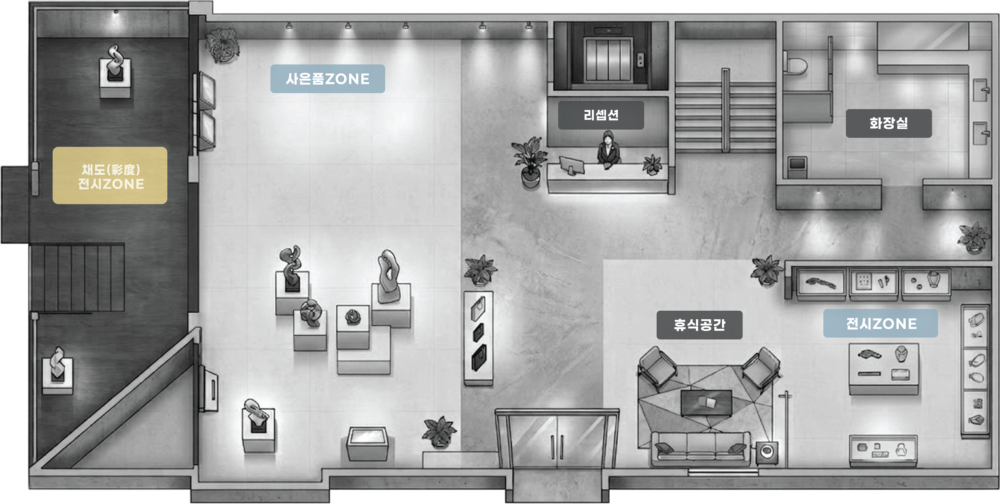
관람객의 시선으로 기록된 전시 경험을 확인해보세요!
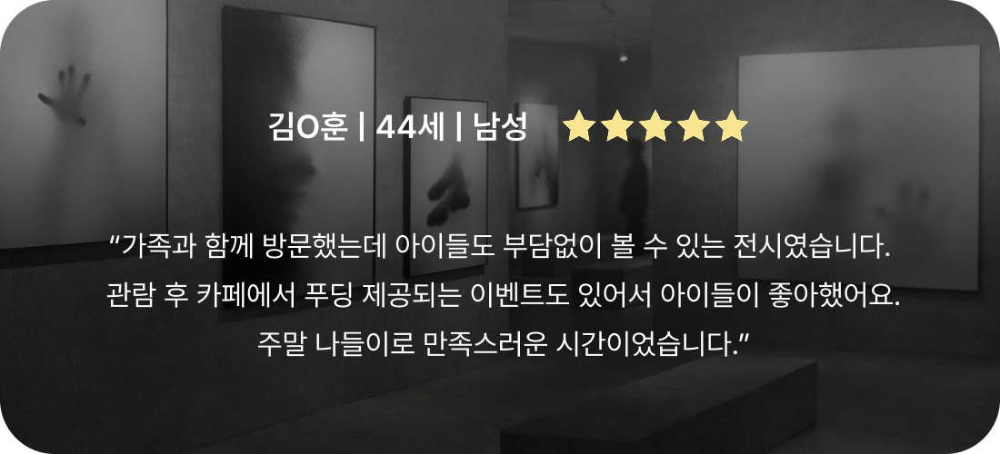
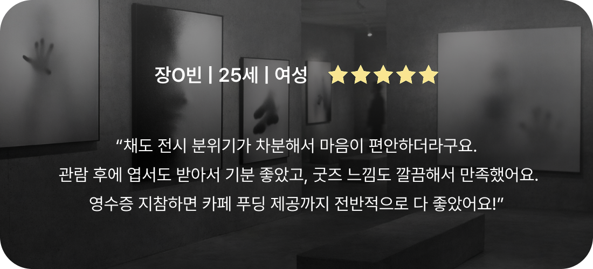
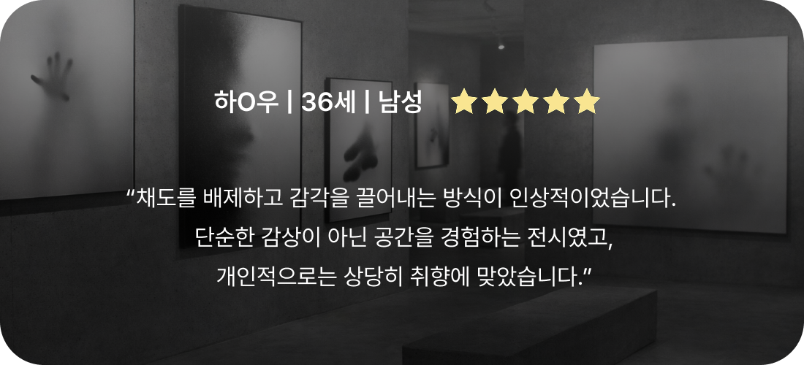
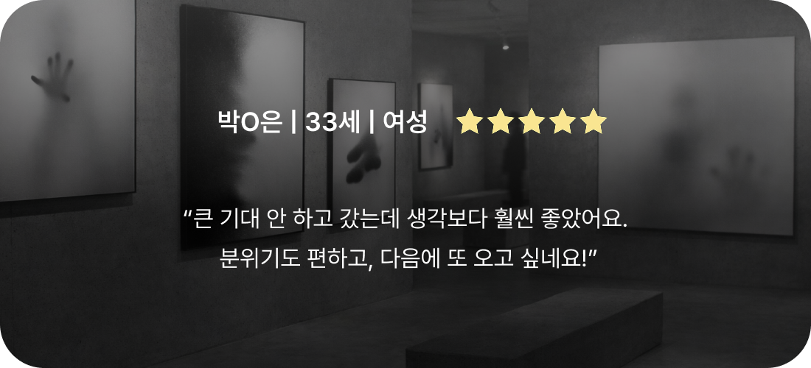
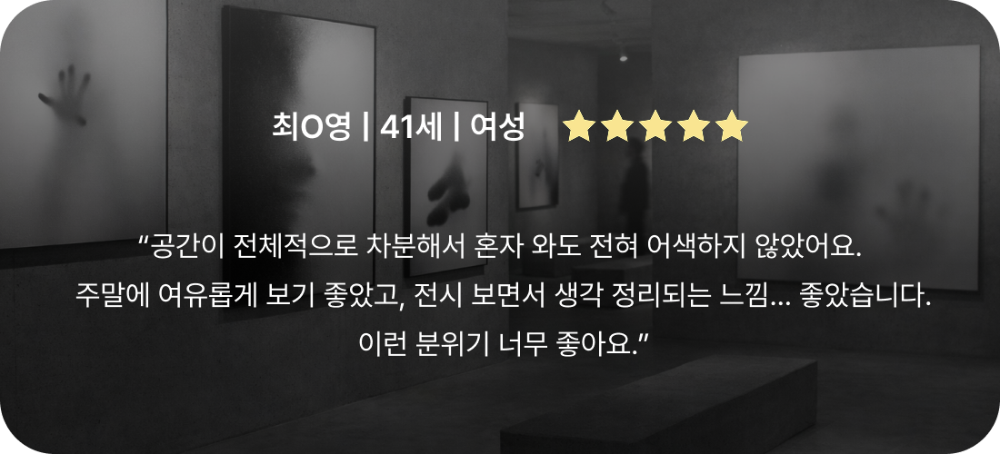
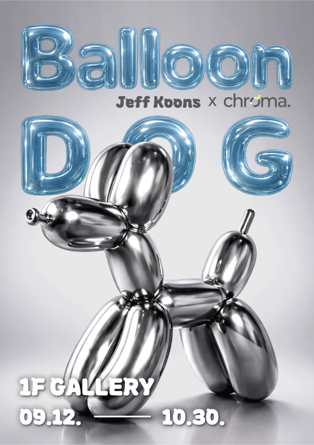
09.12. ~ 10.30.
제프 쿤스의 대표작 ‘풍선개’를 중심으로,
풍선 형태의 오브제를 스테인리스 조각으로 재현한 그의 작업
가벼운 이미지를 견고한 재료로 치환하며,
시각적 경험과 대중적 이미지를 새롭게 해석한다.
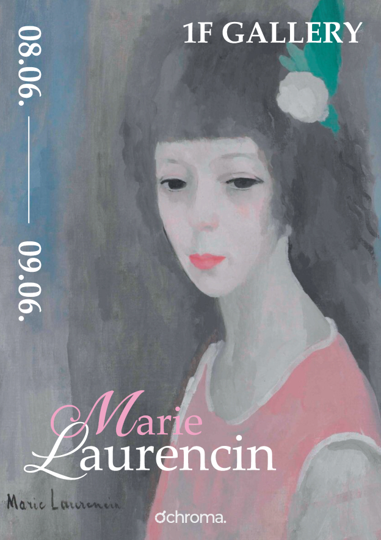
08.06. ~ 09.06.
20세기 초 파리 아방가르드 속에서
독자적인 회화 언어를 구축한 마리 로랑생의 작품
부드러운 파스텔 색조와 유연한 형태로 구축된,
그녀가 만들어낸 회화 세계를 조명한다.